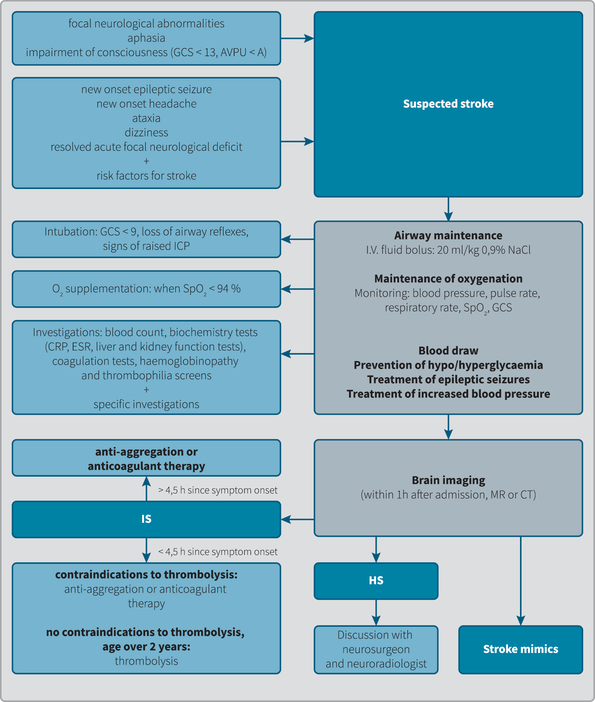

Ischemic stroke in childhood and adolescence: Early detection and acute treatment
Abstract
Stroke in childhood is a rare but important cause of neurological disability in children. Due to the development and availability of neuroradiological investigations childhood stroke can be recognized earlier. Aetiology and risk factors of stroke in childhood differ largely from stroke in adulthood, as do causes in the neonatal period from those in childhood. The most frequent risk factors for arterial ischaemic stroke in childhood and adolescence are arteriopathies, congenital heart diseases and thrombophilias. There can be more than one risk factor involved. Clinical presentation of stroke is diverse, and diagnosis is often delayed. Not only can stroke lead to a loss of certain brain functions, it may also have devastating consequences for a child’s development.
Due to the importance of early detection, this article focuses on major risk factors and different clinical presentations of ischaemic stroke in children. To minimize the damage and to provide better outcomes, we outline recent guidelines for acute management of paediatric stroke. Recommendations regarding stroke management in this article are intended for paediatric population from one month to including 18 years of age.
1 Introduction
Stroke is the consequence of damage to brain cells by a vascular cause (1). It is divided into ischaemic stroke and haemorrhagic stroke. Ischaemic stroke (IS) is a sudden focal disturbance of blood supply to the brain, which leads to irreversible ischaemia of the brain tissue. When the ischaemia is transient or reversible, we speak of a transient ischaemic attack (TIA). The neurological signs in TIA have an acute onset and resolve without permanent sequelae (2). Haemorrhagic stroke (HS) refers to any intraventricular, intraparenchymal or subarachnoid haemorrhage that is not the consequence of an injury (3,4). In contrast to the adult population, where IS accounts for the majority of stroke cases, the incidence rates of IS and HS in the paediatric period are comparable (5). A special category of stroke is venous sinus thrombosis, which may cause ischaemia and/or intracerebral haemorrhage (1). Venous sinus thrombosis is rare in children; it occurs most frequently in association with thrombophilia, other potential causes being anaemia, dehydration and chronic diseases (3,6).
The risk of stroke (ischaemic and haemorrhagic) is highest in the first month of life, the incidence in newborns is comparable to that in adults (7,8). The risk factors for stroke in the newborn period differ from those in later life. Paediatric stroke refers to the age group from the 28th day to the completed 18th year of life and is dealt with separately.
After the newborn period, IS incidence in the paediatric population in the developed world is between 2 and 8 cases/100,000 children per year (average 2.3/100,000 children per year). IS ranks among the 10 leading causes of mortality in children (9,10). Between 50 % and 80 % of paediatric IS survivors have lifelong neurological deficits in the form of motor and cognitive disabilities (11).
In as many as two thirds of cases, IS has a sudden onset in a previously healthy child; only 25 % of children with IS suffer from a condition that represents an increased risk, e.g. congenital heart disease. The causes of IS in children and adolescents are as a rule different than in adults, but the clinical picture in adolescents is the same as in adults, whereas in a small child, the symptoms and signs may be concealed (3,5,6).
The diagnosis of IS in the paediatric period may be delayed because of low awareness of childhood stroke in the general public and among primary care physicians. Moreover, the clinical presentation in children, especially younger ones, may be different compared with adults (12-16).
In Slovenia, on average 5 children are treated for IS per year (17). According to the distribution of work among hospitals adopted in 2011, all children with IS are treated at the Department of Child, Adolescent and Developmental Neurology of the University Children’s Hospital in Ljubljana. Therefore, any suspicion of IS in a child requires prompt consultation with the paediatric neurologist on call at the University Children’s Hospital in Ljubljana, who can be reached at the phone number 01 522 7146 during regular working hours, or through the Hospital’s emergency service (phone number 01 522 8857) at other times.
2 Causes and risk factors for the development of IS in children and adolescents
The risk factors for IS in childhood differ significantly from those in the adult population. The most common risk factors in adults, namely atherosclerosis, arterial hypertension, metabolic syndrome and diabetes, play a negligible role in the paediatric period (3,14,18). Two thirds of IS cases in childhood and adolescence are the consequence of various arteriopathies and congenital heart diseases, followed by acquired or congenital thrombophilias, acute or chronic systemic diseases, infections, malignant diseases, haemoglobinopathies etc. (6,9,14). Often several factors are involved simultaneously (19). The risk factors and causes of IS are summarized in Table 1.
|
Causes |
|
|
Arteriopathies |
Inflammatory and immune-mediated: •Focal cerebral arteriopathy: •post-VZV arteriopathy, •transient angiopathy, •Primary CNS vasculitis •Secondary CNS vasculitis; SLE, PAN, IBD, Takayasu arteritis Infectious: Lyme disease, coxsackie viruses, influenza A, enteroviruses, parvovirus B19, mycoplasmosis, bacterial or tuberculous meningitis, HIV. Other: •arterial dissection, •moyamoya disease, •post-radiation vasculopathy, •reversible segmental cerebral vasospasm, •genetic: COL4A1, •connective tissue diseases (Marfan sindrom, Ehlers-Danlos syndrome), •neurofibromatosis type 1, •trisomy 21. |
|
Cardiovascular diseases |
Cardiac surgery/procedures (especially within the past 72 h), ECMO Congenital heart diseases with right-to-left shunt and cyanosis Bacterial endocarditis, myocarditis Severe ventricular dysfunctiion Cardiomyopathy Atrial septal aneurysm Atrial septal defect Heart valve disease Patent foramen ovale Venous thrombosis + right-to-left shunt |
|
Thrombophilias |
Factor V Leiden Hyperlipoproteinaemia A Prothrombin 20210A mutation Methylenetetrahydrofolate reductase deficiency Hyperhomocysteinaemia Protein S or C deficiency Antithrombin III deficiency Antiphospholipid syndrome, lupus anticoagulants, anti-cardiolipin antibodies Sticky platelet syndrome |
|
Haematological conditions |
Sideropenic anaemia Sickle cell anaemia Leukaemia Haemolytic uremic syndrome Immune thrombocytopenic purpura Thrombotic thrombocytopenic purpura |
|
Medicines, drugs |
Oral contraceptives Chemotherapy (L-asparginase) Cocaine, methamphetamines Triptans, ergot alkaloids |
|
Other |
Migraine Congenital metabolic diseases: Fabry disease, homocystinuria, mitochondrial diseases Fever > 48 h, sepsis, shock, dehydration, acidosis, hypoxia |
CNS – central nervous system, SLE – systemic lupus erythematosus, PAN – polyarteritis nodosa, IBD – inflammatory bowel disease, ECMO – extracorporeal membrane oxygenation
3 Clinical picture
Ischaemic stroke is characterized by a rapidly evolving clinical picture of focal and/or global cerebral dysfunction, although in rare cases, IS can be clinically silent (16). In children under 3 years of age, the clinical picture in the acute phase is dominated by nonspecific symptoms and signs, such as vomiting, irritability, epileptic seizures and impairment of consciousness, while focal neurological deficits are only vaguely pronounced (16).
On the basis of the clinical picture alone, it is impossible to distinguish an IS from an AS, and it is often difficult to distinguish an IS from certain non-vascular neurological states. In a number of studies by different authors, the diagnostic evaluation of children with a suspected stroke revealed that 20 % had conditions resembling stroke, i.e. stroke mimics, such as migraine, CNS infection, epilepsy, poisoning, metabolic disorders, brain tumours, psychiatric diseases etc. (18,26,27).
Just like in adults, a helpful tool for early recognition of stroke in the paediatric population is the acronym FAST (Face, Arm, Speech, Time) (27,28), which covers the most frequent clinical manifestations of stroke, such as aphasia, hemiparesis and facial asymmetry, and stresses the importance of rapid action. However, the absence of such clinical signs does not rule out a stroke.
According to the findings of numerous studies, summarized in the 2017 British guideline (20), the clinical picture of IS in children over 3 years of age does not differ significantly from that of HS; the most frequent manifestations in both categories are:
•focal neurological signs,
•epileptic seizures, and
•headache.
Other possible manifestations of stroke in children are:
•changes in mood and behaviour (ranging from irritability in younger children to more complex cognitive changes in older ones),
•disorders of balance and coordination (dizziness, ataxia),
•nausea and vomiting
•neck pain, and
•signs of raised intracranial pressure (impairment of consciousness - from somnolence to coma, bulging anterior fontanel, setting sun phenomenon, papilloedema).
In the management of a child with a suspected stroke, we must be aware that the symptoms and signs may vary widely depending on age, location of the affected vessels, and function of the damaged brain tissue.
4 Diagnostic evaluation
History and clinical examination: The history should focus on recent infections (varicella in the past year), vaccinations, autoimmune diseases, vascular diseases, family history of stroke or venous thrombosis. On clinical examination, we look for dysmorphic characteristics and neurocutaneous lesions.
Urgent blood investigations: These comprise a complete blood count (including blood film and reticulocytes), iron and transferrin levels, blood electrolytes, coagulation tests, basic biochemical tests (CRP, ESR, transaminases, urea and creatinine), and additional tests as required (Table 3).
Brain imaging: The gold standard for establishing the diagnosis and identifying the type of IS is magnetic resonance tomography (MR). When intracranial haemorrhage is suspected, an emergency computed tomography (CT) head scan should be performed (20,29,30). Table 2 summarizes the advantages and shortcoming of the two diagnostic imaging investigations.
|
Advantages |
Drawbacks |
|
|
MR |
•High sensitivity for acute ischaemia •Ability to assess vascular status •Presence/absence of diffusion-perfusion mismatch and possible inflammatory changes •Exclusion or confirmation of stroke mimics (demyelinating disease, encephalitis, tumours) |
•Limited accessibility •Long duration of examination •Need for sedation |
|
CT |
•Greater accessibility •Fast examination •Good detection of intracranial haemorrhage |
•Ionizing radiation •Limited sensitivity for acute ischaemia •Low sensitivity for differential diagnosis of stroke |
The guidelines recommend MR to be used as the initial examination in every child with suspected stroke within an hour of admission for treatment (20,30). If MR is not available, emergency CT and CT angiography (CTA) are performed to rule out possible intracranial haemorrhage. If changes suggestive of ischaemia are visible on CT, MR is performed as soon as possible in order to more accurately assess the condition. In case of a negative CT scan, we also perform MR imaging (as a rule within 24 hours) and magnetic resonance angiography (MRA), which must include vessels from the aortic arch to the vertex. If only computed tomographic angiography (CTA) is at our disposal, this investigation should be equally extensive (20,30). MR imaging examination in the diagnosis of IS includes axial T2-weighted imaging and coronal fluid attenuated inversion recovery (FLAIR) imaging, sagittal T1-weighted imaging, diffusion-weighted imaging (DWI) in three planes, and gradient echo (GRE) imaging. The mismatch of abnormalities between DWI and perfusion-weighted imaging (PWI) is used to identify potentially salvageable brain tissue (35). If the above-mentioned investigations fail to clearly define the vascular lesion, digital subtraction angiography (DSA) is undertaken following consultation with a paediatric interventional radiologist (20).
Further diagnostic evaluation is aimed at identifying the risk factors and causes of an ischaemic stroke. Table 3 presents the diagnostic protocol for children with IS used at the Department of Child, Adolescent and Developmental Neurology, University Children’s Hospital Ljubljana, which allows timely recognition of risk factors and selection of appropriate therapeutic measures (19,24).
|
Diagnostic protocol for the management of children and adolescents with ischaemic stroke |
|
Neuroradiological investigations: MR + MRA of head and neck vessels |
|
Blood tests: •complete blood count, CRP, erythrocyte sedimentation rate •basic tests of haemostasis, D-dimer, fibrinogen level •activated protein C resistance (APC resistance) •protein C activity •molecular genetic testing for factor V Leiden gene mutation and prothrombin gene mutation •free and total protein S •anti-thrombin III (AT III) activity •coagulation factor VII, VIII and XII determination •plasminogen activity •lupus anticoagulants and anti-cardiolipin antibodies |
|
Biochemical investigations •plasma (and CSF) lactate level(s) •plasma ammonium ion level •plasma urate level •plasma amino acid analysis •urine organic acid analysis •plasma homocysteine and MTHFR gene mutation analysis •lipid analysis (lipoprotein (a), cholesterol) |
|
Microbiological investigations of blood and CSF (VZV), serological tests for Borrelia burgdorferi and other pathogens, based on the clinical picture |
|
ECG, EEG |
|
TTE. Contrast-enhanced TCD for detection of right-to-left shunt with Valsalva manoeuvre |
CRP – C reactive protein, MTHFR – methylenetetrahydrofolate reductase, ECG – electrocardiogram, EEG – electroencephalogram, TTE – transthoracic echocardiography, TCD – transcranial Doppler sonography. The tests are performed gradually over several days. Urgent investigations are listed in the first part of this chapter.
5 Recommendations for acute therapeutic management
Because of the diverse aetiology, the management of a child with IS is always multidisciplinary, requiring paediatric neurologists to cooperate with other specialists, e.g. neuroradiologists, vascular neurologists, paediatric haematologists, paediatric cardiologists, paediatric immunologists, and neurosurgeons.
The planning of acute phase care for a child with IS in Slovenia is coordinated by the paediatric neurologist on call at Children’s Hospital in Ljubljana, who may, for more efficient organization of treatment, also consult the adult neurologist accessible on the phone number of the telestroke service.
5.1 Thrombolysis and thrombectomy
The established acute phase treatment for ischaemic stroke in adults within the therapeutic window is dissolution (thrombolysis) or mechanical removal of the blood clot (thrombectomy). Thrombolysis is performed using the drug Alteplase, a recombinant tissue plasminogen activator (rtPA). The optimal doses of rtPA for the acute treatment of IS in different age groups of children have not been determined because the randomized studies performed in the paediatric population so far, as well as the number of study participants have been inadequate. Moreover, the safety of this treatment and its outcome in children have not been adequately researched. Thus, thrombolysis has not become part of the standard care of children with IS (28,31,36,37), although various recent recommendations, based on smaller studies and expert clinical experience (26,36,38), allow the possibility of thrombolytic treatment for childhood IS, provided that the criteria for its use are fulfilled (20,39). Due to the shortage of data on children, some criteria for thrombolysis are the same as in adults, e.g. administration within 4.5 hr after the onset of symptoms or signs of IS (20,26). The following conditions must also be met:
•age over 2 years,
•presence of focal neurological signs,
•image-proven reversible ischaemia with no signs of intracranial haemorrhage,
•consciousness level below A on the AVPU scale (Alert Voice Pain Unresponsive).
The contraindications to thrombolysis are listed in Table 4.
|
Contraindications to thrombolysis |
|
|
History |
Absolute: •more than 4.5 hr since symptom onset, •unknown time of symptom onset, •prior stroke, major head injury or intracranial surgery within the past 3 months, •prior intracranial haemorrhage, known arteriovenous malformation or aneurysm, •known allergy to rtPA. |
|
Relative: •arterial puncture at non-compressible site or lumbar puncture within previous 7 days, •surgical procedure or biopsy within previous 10 days, •gastrointestinal or urinary bleeding within 21 days, •previously diagnosed primary angiitis of the central nervous system (CNS) or secondary CNS vasculitis, •malignancy or specific oncologic treatment within the past month. |
|
|
Patient factors |
Absolute: •systolic pressure > 15 % above the 95th percentile for age, •severe blood coagulation disorder (mild forms are not a contraindication), •patient would decline blood transfusion if indicated. |
|
Relative: •clinical presentation of myocardial infarction or pericarditis that requires prior evaluation by cardiology. |
|
|
IS aetiology |
Relative: •endocarditis, sickle-cell anaemia, embolisms (fat, air), Moyamoya disease, primary CNS vasculitis or secondary vasculitis (except focal cerebral arteriopathy). |
|
Brain imaging |
Absolute: •acute intracerebral haemorrhage, •large infarct volume in middle cerebral artery territory (e.g. > 33 % hypodense area on CT), •intracranial artery dissection. |
|
Relative: •clinical presentation suggestive of subarachnoid haemorrhage even if CT/MR is negative. |
|
|
Laboratory findings |
Absolute: •blood sugar < 2.8 mmol/L or > 22.2 mmol/L, •platelets < 100,000/mm3, •INR > 1.4. |
As the optimal rtPA doses for children are as yet unknown, most centres use the same doses as in adults. The total dose is 0.9 mg/kg, of which 10 % is administered as an initial intravenous bolus over 1 minute, followed by the remaining 90 % infused intravenously over 1 hour. The patient’s vital functions, especially arterial pressure, should be monitored (26,36).
Mechanical revascularization or thrombectomy is a research-supported treatment for ischaemic stroke in adults with anterior cerebral artery occlusion within 6 hours after symptom onset (42). In the paediatric population, thrombectomy is not used routinely for the present, since data on its use and outcome are relatively scarce.
5.2 Platelet anti-aggregation therapy
In the absence of contraindications, treatment with acetylsalicylic acid is started within 24 hours after diagnosis at a dose of 5 mg/kg to a maximum dose of 300 mg daily. If thrombolysis is undertaken, treatment with acetylsalicylic acid is postponed for 24 hours. After 14 days of high-dose acetylsalicylic acid therapy, the dosage can be reduced to 1–3 mg/kg to a final dose of 75 to 100 mg per day (20,39,43). The contraindications to acetylsalicylic acid therapy are blood coagulation disorders, thrombocytopenia, intracranial haemorrhage, active gastrointestinal bleeding, known allergy to acetylsalicylic acid, and increased risk of Reye’s syndrome in the presence of liver or kidney disease, inborn metabolic disease, and current infection with influenza virus or varicella-zoster virus. In such cases, other anti-aggregants (e.g. clopidogrel) can be used (43). With regard to the aetiology of IS, the appropriateness of anticoagulant, immunosuppressive and antimicrobial therapy also warrants consideration.
5.3 Anticoagulant therapy
Among arteriopathies in children and young adults, a major cause of IS is cervical or cerebral artery dissection, which should be considered especially in patients with a history of trauma to the head or neck region. If IS is the consequence of dissection, anticoagulant therapy with low-molecular-weight heparin should be administered for at least 6 weeks (20,39).
Anticoagulant therapy is usually instituted also in suspected or confirmed cardioembolism. The treatment lasts at least 3 months and, especially in complex heart defects, the type of anticoagulant therapy is determined in consultation with cardiologists and haematologists (20,39). A special subgroup comprises cardioembolisms through a patent foramen ovale, especially in the presence of a prothrombotic condition. In such a case, transcatheter closure of the oval window is possible (39,44).
5.4 Immunosuppressive and antimicrobial treatment
Inflammation of the arterial wall (arterial vasculitis) is an important cause and/or risk factor for the development of ischaemic stroke in the paediatric period (23,45). In some centres, patients receive immunosuppressive therapy for the treatment of the primary disease, in addition to antithrombotic therapy. Various studies found that the concurrent use of immunosuppressive therapy resulted in a better treatment outcome and prevented the progression of arterial stenosis and recurrence of ischaemic stroke (46-49). However, since the available data are still inadequate to prove with certainty the benefit of immunosuppressive treatment, the decision is currently individual, depending on the clinical picture (50). The treatment of IS associated with primary central nervous system vasculitis requires the cooperation of a paediatric rheumatologist. These patients are given in addition to antithrombotic and high-dose steroid therapy also a second immunosuppressive drug (e.g. cyclophosphamide) (51,52).
As a separate entity, we must mention VZV arteriopathy, where the presence of the virus in the liquor of individual patients can be demonstrated by the method of polymerase chain reaction (PCR). Such cases require additional treatment with intravenous acyclovir administered in consultation with an infectologist (49,53).
Another possible cause of vasculitis and secondary ischaemic events is the bacterium Borrelia burgdorferi, implicated in a small proportion of patients (0.3–1 %) with proven Lyme disease. Early diagnosis and treatment are crucial for a good outcome of this rare but dangerous complication. The recommended medications are ceftriaxone, cefotaxime or penicillin G in intravenous form. Oral doxycycline is effective as well (54).
5.5 Neurosurgical interventions
In case of an extensive IS associated with impairment of consciousness, urgent brain imaging in the acute phase must be followed by immediate consultation with a neuroradiologist, vascular neurologist and neurosurgeon (Figure 1). Children with an extensive middle cerebral artery infarction may develop extensive cerebral oedema requiring decompressive craniectomy (55,56). Decompressive craniectomy is also necessary in individual patients with acute phase posterior fossa stroke, because of the evolving cerebral oedema and danger of herniation (20).

If MR is not available, CT can be performed, although it is less sensitive for ischaemic changes. When there are no visible abnormalities on CT but the clinical picture is suspicious for stroke, a MR scan should also be obtained. An intra-cranial haemorrhage visible on CT calls for immediate consultation with a neurosurgeon and a neuro-radiologist. In case of an extensive infarction in middle cerebral artery territory, a neurosurgeon should be consulted regarding the possibility of decompressive craniectomy.
Increased blood pressure is treated if thrombolysis is foreseen and the blood pressure level is > 15 % above the 95th percentile for the patient’s age, or when signs of hypertensive encephalopathy or damage of other organs (heart, kidneys) are present.
Stroke mimics: migraine, CNS infection, epilepsy, poisoning, metabolic disorders, brain tumours, mental illness etc.
GCS – Glasgow Coma Scale, IKT – intrakranialni tlak
5.6 Treatment of patients with sickle cell anaemia (SA)
Although SA is a major cause of IS in children elsewhere in the world, we have treated no such cases in Slovenia so far. Emergency treatment with blood transfusion is advisable for all patients with known SA and acute neurological signs, to reduce the HbS rate below 30 % and increase the Hb level above 100–110 g/L. An exchange transfusion is usually necessary to achieve this goal. If exchange transfusion is not available within six hours after diagnosis, supplementary transfusion is necessary to raise the Hb level above 100 g/L and improve blood supply to the brain. Generally, SA patients must receive regular blood transfusions to maintain the Hb level above 90 g/L and HbS below 30 % (20).
6 Prognosis
Although we currently have at our disposal different diagnostic methods for fast recognition of stroke, as well as established therapeutic procedures for the prevention or, at least, alleviation of its consequences, studies have shown that as many as two thirds of children who suffer a stroke will have various neurological problems throughout their life. The prognosis is worse in children with confirmed bilateral ischaemia and severe impairment of consciousness at the time of the ischaemic event. Among the various aetiologic factors of ischaemic stroke in the paediatric population, arteriopathy is most frequently associated with late neurological sequelae and carries the highest risk of stroke recurrence (57).
7 Conclusion
With this article, we wish to raise physicians’ awareness of the occurrence of stroke in the paediatric population and thereby increase the likelihood of its timely recognition and appropriate acute management. Fast diagnosis improves the success of treatment, which reduces the extent of brain tissue injury and the possibility of long-term neurological sequelae. The variable pathology and risk factors for IS in the paediatric period, along with the fact that this is a comparatively rare condition, make it essential for paediatric neurologists to cooperate with tertiary level specialists in different fields of paediatrics, including neuroradiologists, neurosurgeons and neurologists at the stroke centre.